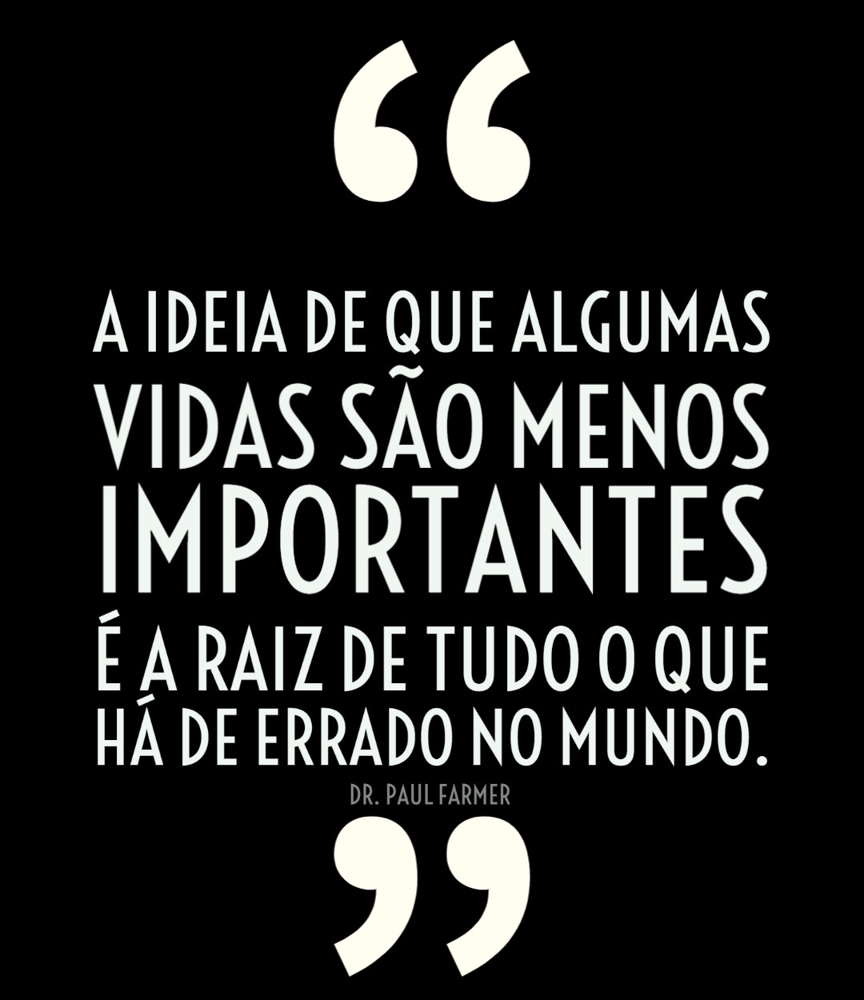

Essa é uma lista separada de animais que já estão em extinção, uma menção honrosa para todos esses bichos inocentes,
que infelizmente senão tratarmos do nosso planeta, a expectativa é da fauna só piorar, então por isso valorize todas as vidas,
quando você luta a favor do animal, não é porque espera aplausos, e sim porque é o certo.
